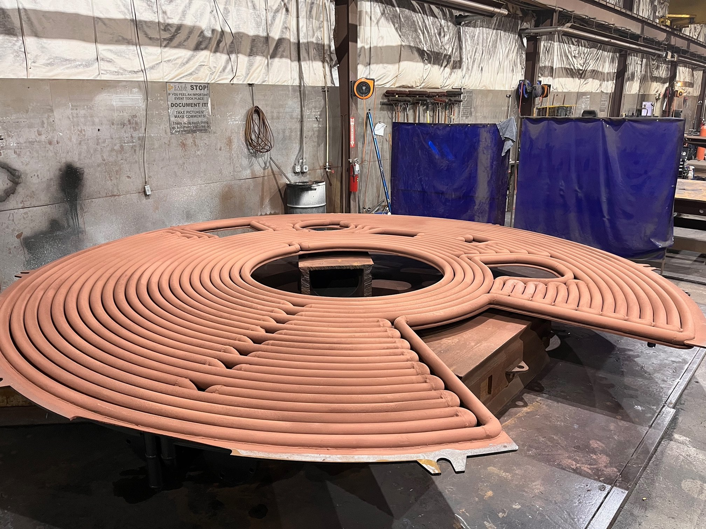
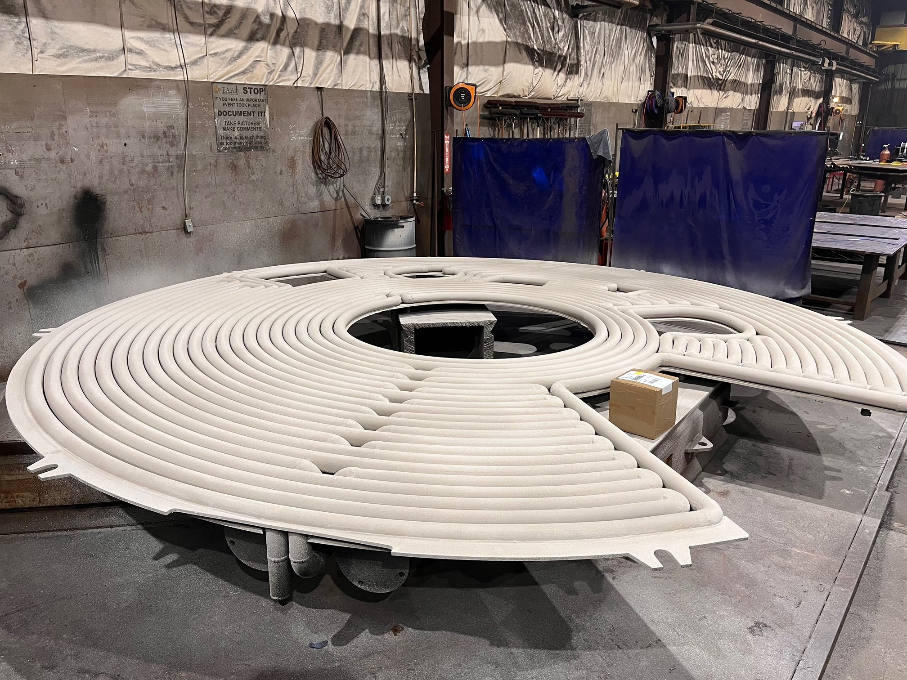

The ladle metallurgy furnace (LMF) at JSW Steel was experiencing excessive heat loss, high shell temperatures, and frequent weld repairs on its water-cooled tubular roof due to extreme radiant heat from the melt. ITC Coatings applied a proprietary ceramic coating system to the hot face of the roof tubes, extending roof life 1.5--2 times while improving thermal efficiency and reducing maintenance.
JSW Steel's LMF roof is 203 inches in diameter and utilizes a water-cooled, tubular construction. The extreme radiant heat from the molten steel melt was creating two serious problems:
LMF roof failures are not just expensive -- they can be dangerous. Pin hole leaks in water-cooled systems near molten steel create serious safety risks, and unplanned roof replacements result in costly production downtime.
ITC recommended a multi-coat ceramic coating system applied directly to the hot face (underside) of the water-cooled tubes. The project consisted of completely coating the underside of the entire roof.
The coating system included ITC 213 (ceramic coating for metals) as the base layer, designed to protect the metal tubes from oxidation while re-radiating heat back down to the melt. The system works by keeping the heat load off the water-cooled tubes -- instead of absorbing radiant energy from the melt, the coated surface reflects it back into the process where it belongs.
This delivers three simultaneous benefits:

ITC 213 metal coating applied to the water-cooled tubular LMF roof

Completed LMF roof section with full ITC ceramic coating system
The ceramic coatings increased the service life of the LMF roof sections by 1.5 to 2 times. For a component that faces some of the most extreme thermal conditions in any steel mill, this extension translates into significant cost savings on roof section replacements and reduced production downtime.
The combination of ITC's ceramic coatings protected the water-cooled tubes from oxidation, lowering shell temperatures and reducing the occurrence of pin hole leaks. Fewer leaks means less emergency maintenance, fewer safety incidents, and more reliable production schedules.
By re-radiating heat back to the melt instead of absorbing it into the cooling water, the coating system improved the thermal efficiency of the entire LMF process. This means less electrical energy is needed to maintain melt temperature, contributing to lower overall energy costs.
| Roof Life Extension | 1.5--2x longer |
| Pin Hole Leaks | Significantly reduced |
| Weld Repairs | Reduced frequency |
| Thermal Efficiency | Improved -- less energy lost to cooling water |
The same coating technology used on JSW Steel's LMF roof applies to a wide range of water-cooled steel mill components:
In every application, the principle is the same: protect the metal from oxidation, reduce heat loss to cooling water, and extend component life.
For steel producers looking to extend the life of water-cooled components and reduce maintenance costs, ITC's ceramic coating systems offer a proven solution. Contact ITC Coatings to discuss your LMF, EAF, or water-cooled component needs.
ITC Coatings has been engineering high-temperature ceramic coating solutions for the steel industry since 1980. Our coatings protect water-cooled components, refractory linings, and metal substrates in some of the most extreme thermal environments in industrial manufacturing. Based in San Angelo, Texas.
Ready to reduce your energy costs and extend refractory life?
Email: info@itccoatings.com
Phone: (325) 340-1304
Web: itccoatings.com